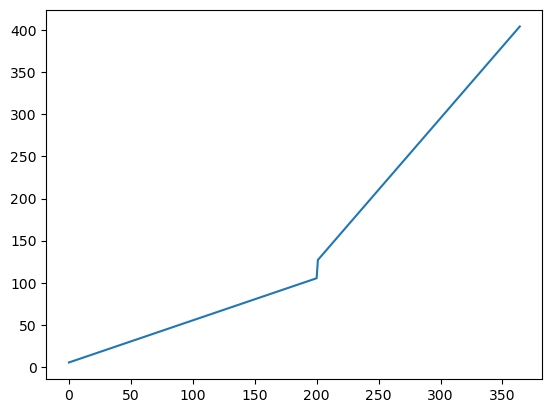
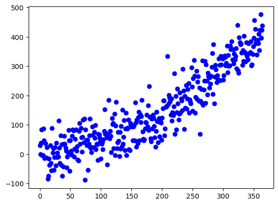
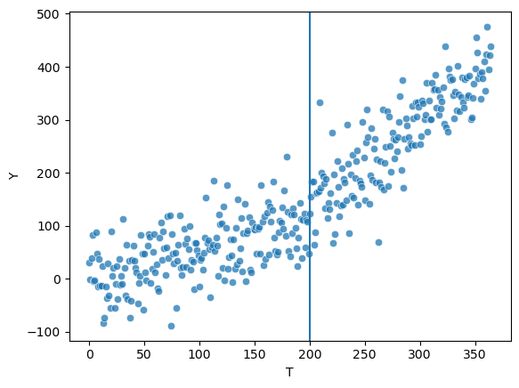
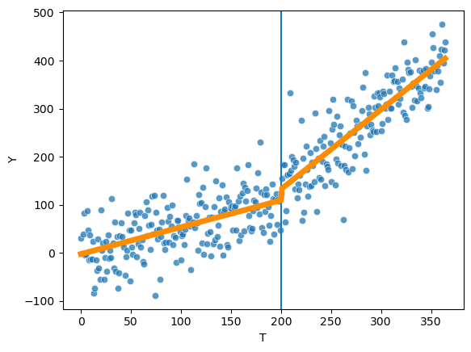
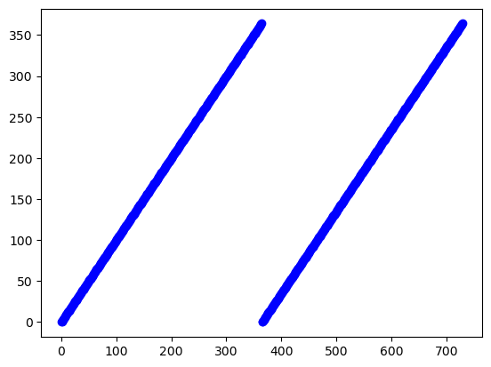
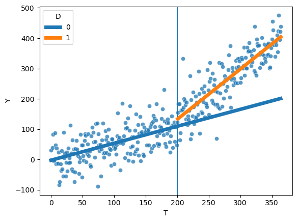
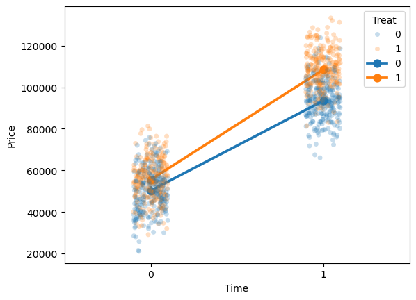
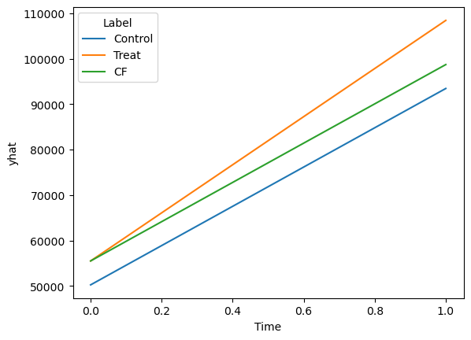

import random
import numpy as np
import pandas as pd
import matplotlib.pyplot as plt
import seaborn as sns
import statsmodels.api as sm
import statsmodels.formula.api as smf
np.random.seed(42)Week 3: ITS and DID
Also need scipy and the statsmodel
T = np.arange(365)
D = np.where(T > 200, 1, 0)
P = T - 200
P = np.where(T <= 200, 0, P)
Y = 5.4 + 0.5 * T + 20 * D + 1.2 * P
Yarray([ 5.4, 5.9, 6.4, 6.9, 7.4, 7.9, 8.4, 8.9, 9.4,
9.9, 10.4, 10.9, 11.4, 11.9, 12.4, 12.9, 13.4, 13.9,
14.4, 14.9, 15.4, 15.9, 16.4, 16.9, 17.4, 17.9, 18.4,
18.9, 19.4, 19.9, 20.4, 20.9, 21.4, 21.9, 22.4, 22.9,
23.4, 23.9, 24.4, 24.9, 25.4, 25.9, 26.4, 26.9, 27.4,
27.9, 28.4, 28.9, 29.4, 29.9, 30.4, 30.9, 31.4, 31.9,
32.4, 32.9, 33.4, 33.9, 34.4, 34.9, 35.4, 35.9, 36.4,
36.9, 37.4, 37.9, 38.4, 38.9, 39.4, 39.9, 40.4, 40.9,
41.4, 41.9, 42.4, 42.9, 43.4, 43.9, 44.4, 44.9, 45.4,
45.9, 46.4, 46.9, 47.4, 47.9, 48.4, 48.9, 49.4, 49.9,
50.4, 50.9, 51.4, 51.9, 52.4, 52.9, 53.4, 53.9, 54.4,
54.9, 55.4, 55.9, 56.4, 56.9, 57.4, 57.9, 58.4, 58.9,
59.4, 59.9, 60.4, 60.9, 61.4, 61.9, 62.4, 62.9, 63.4,
63.9, 64.4, 64.9, 65.4, 65.9, 66.4, 66.9, 67.4, 67.9,
68.4, 68.9, 69.4, 69.9, 70.4, 70.9, 71.4, 71.9, 72.4,
72.9, 73.4, 73.9, 74.4, 74.9, 75.4, 75.9, 76.4, 76.9,
77.4, 77.9, 78.4, 78.9, 79.4, 79.9, 80.4, 80.9, 81.4,
81.9, 82.4, 82.9, 83.4, 83.9, 84.4, 84.9, 85.4, 85.9,
86.4, 86.9, 87.4, 87.9, 88.4, 88.9, 89.4, 89.9, 90.4,
90.9, 91.4, 91.9, 92.4, 92.9, 93.4, 93.9, 94.4, 94.9,
95.4, 95.9, 96.4, 96.9, 97.4, 97.9, 98.4, 98.9, 99.4,
99.9, 100.4, 100.9, 101.4, 101.9, 102.4, 102.9, 103.4, 103.9,
104.4, 104.9, 105.4, 127.1, 128.8, 130.5, 132.2, 133.9, 135.6,
137.3, 139. , 140.7, 142.4, 144.1, 145.8, 147.5, 149.2, 150.9,
152.6, 154.3, 156. , 157.7, 159.4, 161.1, 162.8, 164.5, 166.2,
167.9, 169.6, 171.3, 173. , 174.7, 176.4, 178.1, 179.8, 181.5,
183.2, 184.9, 186.6, 188.3, 190. , 191.7, 193.4, 195.1, 196.8,
198.5, 200.2, 201.9, 203.6, 205.3, 207. , 208.7, 210.4, 212.1,
213.8, 215.5, 217.2, 218.9, 220.6, 222.3, 224. , 225.7, 227.4,
229.1, 230.8, 232.5, 234.2, 235.9, 237.6, 239.3, 241. , 242.7,
244.4, 246.1, 247.8, 249.5, 251.2, 252.9, 254.6, 256.3, 258. ,
259.7, 261.4, 263.1, 264.8, 266.5, 268.2, 269.9, 271.6, 273.3,
275. , 276.7, 278.4, 280.1, 281.8, 283.5, 285.2, 286.9, 288.6,
290.3, 292. , 293.7, 295.4, 297.1, 298.8, 300.5, 302.2, 303.9,
305.6, 307.3, 309. , 310.7, 312.4, 314.1, 315.8, 317.5, 319.2,
320.9, 322.6, 324.3, 326. , 327.7, 329.4, 331.1, 332.8, 334.5,
336.2, 337.9, 339.6, 341.3, 343. , 344.7, 346.4, 348.1, 349.8,
351.5, 353.2, 354.9, 356.6, 358.3, 360. , 361.7, 363.4, 365.1,
366.8, 368.5, 370.2, 371.9, 373.6, 375.3, 377. , 378.7, 380.4,
382.1, 383.8, 385.5, 387.2, 388.9, 390.6, 392.3, 394. , 395.7,
397.4, 399.1, 400.8, 402.5, 404.2])plt.plot(Y)
err = np.random.normal(0, 50, 365)
Y = Y + errplt.plot(Y, 'bo')
#well_df <- as.data.frame(cbind(Y, T, D, P))
well_df = pd.DataFrame({'Y': Y,
'T': T,
'D': D,
'P': P})sns.scatterplot(well_df,
x = "T",
y = "Y",
alpha = 0.75)
plt.axvline(x=200)
mod = smf.ols(formula='Y ~ T', data=well_df)
fit0 = mod.fit()
print(fit0.summary()) OLS Regression Results
==============================================================================
Dep. Variable: Y R-squared: 0.817
Model: OLS Adj. R-squared: 0.816
Method: Least Squares F-statistic: 1618.
Date: Fri, 06 Sep 2024 Prob (F-statistic): 8.38e-136
Time: 16:50:59 Log-Likelihood: -1986.9
No. Observations: 365 AIC: 3978.
Df Residuals: 363 BIC: 3986.
Df Model: 1
Covariance Type: nonrobust
==============================================================================
coef std err t P>|t| [0.025 0.975]
------------------------------------------------------------------------------
Intercept -53.6683 5.862 -9.155 0.000 -65.196 -42.141
T 1.1211 0.028 40.218 0.000 1.066 1.176
==============================================================================
Omnibus: 0.840 Durbin-Watson: 1.519
Prob(Omnibus): 0.657 Jarque-Bera (JB): 0.939
Skew: -0.068 Prob(JB): 0.625
Kurtosis: 2.792 Cond. No. 420.
==============================================================================
Notes:
[1] Standard Errors assume that the covariance matrix of the errors is correctly specified.mod = smf.ols(formula='Y ~ T + D + P', data=well_df)
fit1 = mod.fit()
print(fit1.summary()) OLS Regression Results
==============================================================================
Dep. Variable: Y R-squared: 0.870
Model: OLS Adj. R-squared: 0.869
Method: Least Squares F-statistic: 803.5
Date: Fri, 06 Sep 2024 Prob (F-statistic): 2.35e-159
Time: 16:50:59 Log-Likelihood: -1924.6
No. Observations: 365 AIC: 3857.
Df Residuals: 361 BIC: 3873.
Df Model: 3
Covariance Type: nonrobust
==============================================================================
coef std err t P>|t| [0.025 0.975]
------------------------------------------------------------------------------
Intercept -2.4776 6.667 -0.372 0.710 -15.588 10.632
T 0.5594 0.058 9.701 0.000 0.446 0.673
D 22.9193 9.991 2.294 0.022 3.271 42.568
P 1.0990 0.097 11.308 0.000 0.908 1.290
==============================================================================
Omnibus: 4.812 Durbin-Watson: 2.136
Prob(Omnibus): 0.090 Jarque-Bera (JB): 5.520
Skew: 0.134 Prob(JB): 0.0633
Kurtosis: 3.539 Cond. No. 908.
==============================================================================
Notes:
[1] Standard Errors assume that the covariance matrix of the errors is correctly specified.sm.stats.anova_lm(fit0, fit1)| df_resid | ssr | df_diff | ss_diff | F | Pr(>F) | |
|---|---|---|---|---|---|---|
| 0 | 363.0 | 1.142920e+06 | 0.0 | NaN | NaN | NaN |
| 1 | 361.0 | 8.122294e+05 | 2.0 | 330690.71979 | 73.488689 | 1.679349e-27 |
well_df['yhat'] = fit1.predict()fig, ax = plt.subplots()
sns.scatterplot(well_df, x = "T", y = "Y",
alpha = 0.75, ax=ax)
plt.axvline(x=200)
sns.lineplot(well_df, x = "T", y = "yhat", ax=ax, color = "darkorange", linewidth=5)
fit1.paramsIntercept -2.477644
T 0.559382
D 22.919297
P 1.098989
dtype: float64b0 = fit1.params['Intercept']
b1 = fit1.params['T']
b2 = fit1.params['D']
b3 = fit1.params['P']post_time = 20
b0 + b1 * (200 + post_time) + b2 + b3 * post_timenp.float64(165.4855648977787)b0 + b1 * (200 + post_time) np.float64(120.58648318541084)T_pred = np.concatenate([T, T])
D_pred = np.concatenate([D, np.repeat(0, len(D))])
P_pred = np.concatenate([P, np.repeat(0, len(P))])np.repeat([0,1,2,3],2)array([0, 0, 1, 1, 2, 2, 3, 3])pred_df = pd.DataFrame({'T': T_pred,
'D': D_pred,
'P': P_pred
})
pred_df.head()
pred_df['yhat'] = fit1.predict(pred_df)plt.plot(pred_df['T'], 'bo')
fig, ax = plt.subplots()
sns.scatterplot(well_df, x = "T", y = "Y",
alpha = 0.75, ax=ax)
plt.axvline(x=200)
sns.lineplot(pred_df, x = "T", y = "yhat", ax=ax, hue = "D", linewidth=5)
DID
Time = np.resize([0,1], 1000)
Treat = np.resize([0,0,1,1], 1000)
y = 50000 + 5000 * Treat + 43000 * Time + 10000 * Treat * Time
e = np.random.normal(0, 10000, 1000)
y = y + e
house_df = pd.DataFrame({'Price': y,
'Treat': Treat,
'Time': Time
})f, ax = plt.subplots()
sns.stripplot(house_df, x = 'Time', y = 'Price', hue = 'Treat', alpha = 0.25)
sns.pointplot(house_df, x = 'Time', y = 'Price', hue = 'Treat')
mod = smf.ols(formula='Price ~ Time + Treat', data=house_df)
fit0 = mod.fit()
print(fit0.summary()) OLS Regression Results
==============================================================================
Dep. Variable: Price R-squared: 0.851
Model: OLS Adj. R-squared: 0.850
Method: Least Squares F-statistic: 2839.
Date: Fri, 06 Sep 2024 Prob (F-statistic): 0.00
Time: 16:51:01 Log-Likelihood: -10658.
No. Observations: 1000 AIC: 2.132e+04
Df Residuals: 997 BIC: 2.134e+04
Df Model: 2
Covariance Type: nonrobust
==============================================================================
coef std err t P>|t| [0.025 0.975]
------------------------------------------------------------------------------
Intercept 4.78e+04 564.623 84.657 0.000 4.67e+04 4.89e+04
Time 4.807e+04 651.970 73.733 0.000 4.68e+04 4.94e+04
Treat 1.012e+04 651.970 15.525 0.000 8842.575 1.14e+04
==============================================================================
Omnibus: 1.102 Durbin-Watson: 1.996
Prob(Omnibus): 0.576 Jarque-Bera (JB): 1.153
Skew: 0.039 Prob(JB): 0.562
Kurtosis: 2.853 Cond. No. 3.19
==============================================================================
Notes:
[1] Standard Errors assume that the covariance matrix of the errors is correctly specified.mod = smf.ols(formula='Price ~ Time + Treat + Time:Treat', data=house_df)
fit1 = mod.fit()
print(fit1.summary()) OLS Regression Results
==============================================================================
Dep. Variable: Price R-squared: 0.859
Model: OLS Adj. R-squared: 0.859
Method: Least Squares F-statistic: 2022.
Date: Fri, 06 Sep 2024 Prob (F-statistic): 0.00
Time: 16:51:01 Log-Likelihood: -10629.
No. Observations: 1000 AIC: 2.127e+04
Df Residuals: 996 BIC: 2.129e+04
Df Model: 3
Covariance Type: nonrobust
==============================================================================
coef std err t P>|t| [0.025 0.975]
------------------------------------------------------------------------------
Intercept 5.023e+04 633.857 79.244 0.000 4.9e+04 5.15e+04
Time 4.321e+04 896.410 48.205 0.000 4.15e+04 4.5e+04
Treat 5261.6990 896.410 5.870 0.000 3502.631 7020.767
Time:Treat 9720.5345 1267.715 7.668 0.000 7232.836 1.22e+04
==============================================================================
Omnibus: 0.666 Durbin-Watson: 1.996
Prob(Omnibus): 0.717 Jarque-Bera (JB): 0.746
Skew: 0.025 Prob(JB): 0.689
Kurtosis: 2.876 Cond. No. 6.85
==============================================================================
Notes:
[1] Standard Errors assume that the covariance matrix of the errors is correctly specified.did_coefs = fit1.params.tolist()
did_coefs[50229.645722472276, 43211.59793472184, 5261.699019136594, 9720.534537801836]yhat_control = [did_coefs[0], did_coefs[0] + did_coefs[1]]
yhat_treatment = [did_coefs[0] + did_coefs[2],
did_coefs[0] + did_coefs[2] + did_coefs[1] + did_coefs[3]]
yhat_cf = [did_coefs[0] + did_coefs[2],
did_coefs[0] + did_coefs[2] + did_coefs[1]]np.repeat(["Control", "Treat", "CF"], 2)
np.resize([0,1], 6)array([0, 1, 0, 1, 0, 1])np.concatenate([yhat_control, yhat_treatment, yhat_cf])array([ 50229.64572247, 93441.24365719, 55491.34474161, 108423.47721413,
55491.34474161, 98702.94267633])pred_df = pd.DataFrame({'Label': np.repeat(["Control", "Treat", "CF"], 2),
'Time': np.resize([0,1], 6),
'yhat': np.concatenate([yhat_control, yhat_treatment, yhat_cf])
})sns.lineplot(pred_df, x = "Time", y = "yhat", hue = "Label")